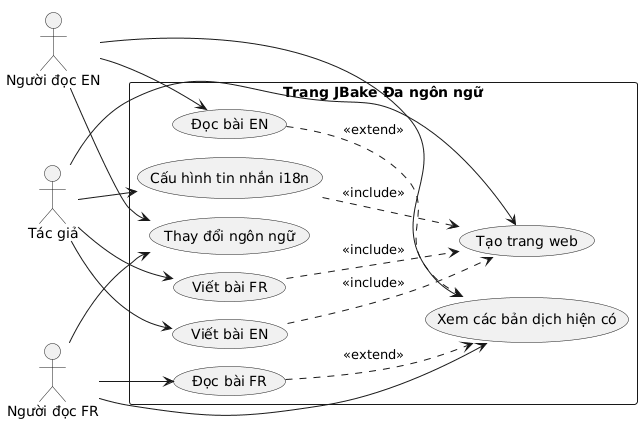
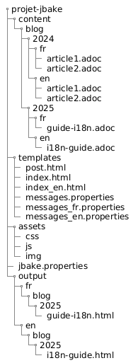
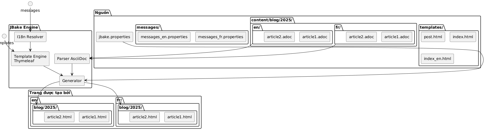
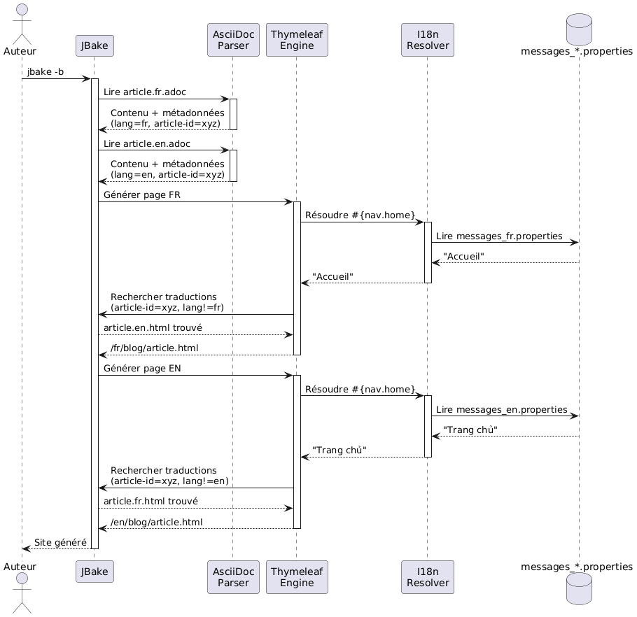
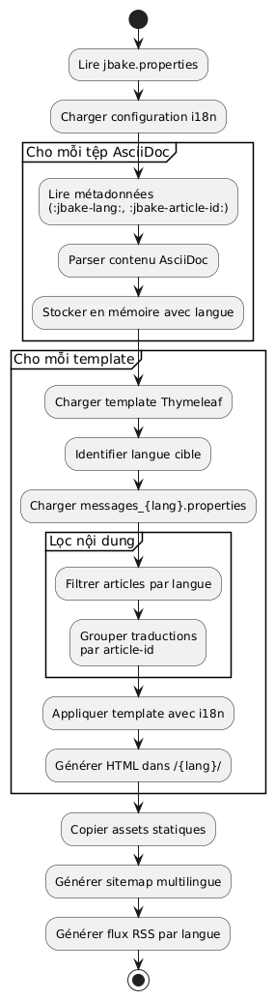
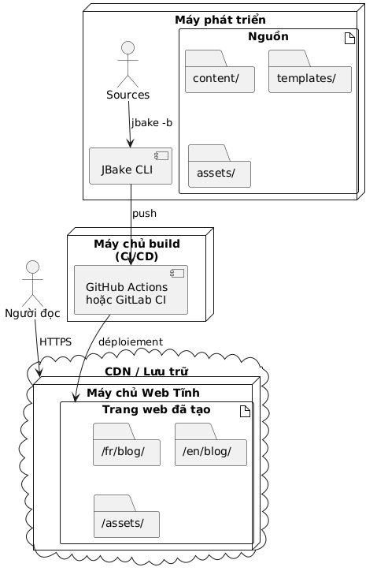

Quốc tế hóa trang web tĩnh JBake với Thymeleaf
Đăng ngày 20 October 2025
Giới thiệu
Việc quốc tế hóa (i18n) một trang web tĩnh có vẻ phức tạp lúc ban đầu, nhưng JBake kết hợp với Thymeleaf cung cấp những giải pháp thanh thoát để tạo ra một trang web đa ngôn ngữ. Trong bài viết này, tôi sẽ hướng dẫn bạn cách tôi triển khai i18n cho blog của mình, bao gồm cả phần tạo mẫu (templating) và quản lý các bài viết bằng nhiều ngôn ngữ khác nhau.
Sơ đồ ca sử dụng (Use Case)

Kiến trúc quốc tế hóa
Cách tiếp cận của chúng tôi dựa trên hai trụ cột:
-
i18n của templating: sử dụng các tệp tin tin nhắn Thymeleaf cho các thành phần giao diện
-
Quốc tế hóa nội dung i18n: tổ chức các bài viết theo ngôn ngữ trong một cấu trúc thư mục riêng biệt
Sơ đồ cấu trúc (Tổ chức tệp tin)

Tại sao lại chọn cách tiếp cận này?
Sự phân tách này cho phép:
-
Duy trì sự nhất quán trong giao diện bất kể ngôn ngữ nào
-
Quản lý độc lập nội dung và bản dịch của các bài viết
-
Tạo điều kiện dễ dàng cho việc thêm ngôn ngữ mới mà không cần refactoring lớn
-
Cho phép các bài viết chỉ khả dụng trong một số ngôn ngữ nhất định
Biểu đồ thành phần

I18n cho templating với Thymeleaf
Cấu trúc các tệp tin thông báo
Bước đầu tiên là tạo các tệp properties cho mỗi ngôn ngữ được hỗ trợ:
src/jbake/templates/
├── messages.properties # Fallback par défaut
├── messages_fr.properties # Français
├── messages_en.properties # Anglais
└── messages_de.properties # AllemandNội dung của các tệp tin tin nhắn
Đây là một ví dụ về tệp`messages_fr.properties`Vui lòng cung cấp văn bản cần dịch.
# Navigation
nav.home=Accueil
nav.blog=Blog
nav.about=À propos
nav.contact=Contact
# Articles
article.readmore=Lire la suite
article.published=Publié le
article.tags=Étiquettes
article.also.available=Également disponible en
# Interface
site.title=Mon Blog Technique
site.description=Partage de connaissances et expériences
footer.copyright=© 2025 Tous droits réservés
search.placeholder=Rechercher un article...Và tương đương tiếng Anh của nó`messages_en.properties`Vui lòng cung cấp văn bản cần dịch.
# Navigation
nav.home=Home
nav.blog=Blog
nav.about=About
nav.contact=Contact
# Articles
article.readmore=Read more
article.published=Published on
article.tags=Tags
article.also.available=Also available in
# Interface
site.title=My Tech Blog
site.description=Sharing knowledge and experiences
footer.copyright=© 2025 All rights reserved
search.placeholder=Search articles...Sử dụng trong các template
Trong các template Thymeleaf của bạn, hãy sử dụng cú pháp`#{}`để truy cập các tin nhắn:
<!DOCTYPE html>
<html xmlns:th="http://www.thymeleaf.org">
<head>
<title th:text="#{site.title}">Mon Blog</title>
<meta name="description" th:content="#{site.description}" />
</head>
<body>
<nav>
<a th:href="@{/}" th:text="#{nav.home}">Accueil</a>
<a th:href="@{/blog/}" th:text="#{nav.blog}">Blog</a>
<a th:href="@{/about.html}" th:text="#{nav.about}">À propos</a>
</nav>
<footer>
<p th:text="#{footer.copyright}">Copyright</p>
</footer>
</body>
</html>Biểu đồ trình tự - Giải quyết i18n

Cấu hình locale trong JBake
Trong tệp của bạn`jbake.properties`, hãy thiết lập locale mặc định:
# Locale par défaut
thymeleaf.locale=fr
# Encodage
template.encoding=UTF-8I18n cho các bài viết: tổ chức theo thư mục
Sơ đồ luồng (Flow) - Tạo

Cấu trúc thư mục
Thay vì sử dụng hậu tố trong tên tệp, tôi đã chọn cách tổ chức theo thư mục để mang lại sự rõ ràng và khả năng bảo trì tốt hơn:
content/blog/
├── 2024/
│ ├── fr/
│ │ ├── introduction-jbake.adoc
│ │ ├── guide-thymeleaf.adoc
│ │ └── astuces-asciidoc.adoc
│ └── en/
│ ├── introduction-jbake.adoc
│ ├── thymeleaf-guide.adoc
│ └── asciidoc-tips.adoc
└── 2025/
├── fr/
│ └── internationalisation-jbake.adoc
└── en/
└── jbake-internationalization.adocƯu điểm của cách tiếp cận này
Cấu trúc này mang lại một số lợi ích:
-
Phân tách rõ ràng: mỗi ngôn ngữ có không gian riêng của mình
-
Đặt tên linh hoạt: các tệp có thể có tên khác nhau tùy theo ngôn ngữ
-
Khả năng mở rộng: dễ dàng thêm một ngôn ngữ mới
-
Tổ chức tự nhiên: tuân theo logic thời gian của JBake
Siêu dữ liệu của bài viết
Mỗi bài viết phải chứa siêu dữ liệu để cho phép liên kết giữa các bản dịch. Dưới đây là một ví dụ:
Phiên bản tiếng Pháp(2025/fr/internationalisation-jbake.adoc) :
= Internationalisation d'un site statique JBake
:jbake-type: post
:jbake-status: published
:jbake-date: 2025-10-20
:jbake-lang: vi
:jbake-article-id: jbake-i18n-thymeleaf
:jbake-tags: jbake, thymeleaf, i18n
:jbake-description: Guide pour mettre en place l'i18n avec JBakePhiên bản tiếng Anh(2025/en/jbake-internationalization.adoc) :
= Internationalizing a JBake Static Site
:jbake-type: post
:jbake-status: published
:jbake-date: 2025-10-20
:jbake-lang: vi
:jbake-article-id: jbake-i18n-thymeleaf
:jbake-tags: jbake, thymeleaf, i18n
:jbake-description: Guide to implement i18n with JBakeLƯU Ý: Thuộc tính`:jbake-article-id:`là điều quan trọng: nó cho phép liên kết các bản dịch khác nhau của cùng một bài viết.
Cấu hình các URL
Trong`jbake.properties`, hãy cấu hình pattern URL để bao gồm ngôn ngữ:
# Pattern d'URL avec langue
post.permalink.pattern=:lang/blog/:year/:name.html
# Langue par défaut
site.default.lang=frĐiều này sẽ tạo ra các URL dạng:
-
/fr/blog/2025/internationalisation-jbake.html -
/en/blog/2025/jbake-internationalization.html
Mẫu cho hiển thị đa ngôn ngữ
Mẫu bài viết với bộ chọn ngôn ngữ
Tạo một template`post.html`hiển thị các bản dịch có sẵn:
<!DOCTYPE html>
<html xmlns:th="http://www.thymeleaf.org">
<head>
<title th:text="${content.title}">Article</title>
</head>
<body>
<article>
<header>
<h1 th:text="${content.title}">Titre</h1>
<div class="article-meta">
<time th:text="${#dates.format(content.date, 'dd MMMM yyyy')}"
th:attr="datetime=${#dates.format(content.date, 'yyyy-MM-dd')}">
Date
</time>
<!-- Sélecteur de traductions -->
<div class="translations" th:if="${content['article-id']}">
<span th:text="#{article.also.available}">Aussi disponible en :</span>
<ul class="language-list">
<li th:each="post : ${published_posts}"
th:if="${post['article-id'] == content['article-id'] and post.lang != content.lang}">
<a th:href="${post.uri}"
th:text="${post.lang.toUpperCase()}">
LANG
</a>
</li>
</ul>
</div>
</div>
</header>
<div class="content" th:utext="${content.body}">
Contenu de l'article
</div>
<footer class="article-footer">
<div class="tags" th:if="${content.tags}">
<span th:text="#{article.tags}">Étiquettes :</span>
<span th:each="tag : ${content.tags}">
<a th:href="@{/tags/{tag}.html(tag=${tag})}"
th:text="${tag}">tag</a>
</span>
</div>
</footer>
</article>
</body>
</html>Chỉ mục được lọc theo ngôn ngữ
Tạo các template index cho mỗi ngôn ngữ:
index.html(chỉ mục tiếng Pháp) :
<!DOCTYPE html>
<html xmlns:th="http://www.thymeleaf.org">
<head>
<title th:text="#{site.title}">Mon Blog</title>
</head>
<body>
<main>
<h1 th:text="#{nav.blog}">Blog</h1>
<div class="articles-list">
<article th:each="post : ${published_posts}"
th:if="${post.lang == 'fr'}">
<h2>
<a th:href="${post.uri}" th:text="${post.title}">Titre</a>
</h2>
<time th:text="${#dates.format(post.date, 'dd MMMM yyyy')}">
Date
</time>
<p th:text="${post.description}">Description</p>
<a th:href="${post.uri}" th:text="#{article.readmore}">
Lire la suite
</a>
</article>
</div>
</main>
</body>
</html>index_en.html(chỉ mục tiếng Anh) :
<!DOCTYPE html>
<html xmlns:th="http://www.thymeleaf.org">
<head>
<title th:text="#{site.title}">My Blog</title>
</head>
<body>
<main>
<h1 th:text="#{nav.blog}">Blog</h1>
<div class="articles-list">
<article th:each="post : ${published_posts}"
th:if="${post.lang == 'en'}">
<h2>
<a th:href="${post.uri}" th:text="${post.title}">Title</a>
</h2>
<time th:text="${#dates.format(post.date, 'dd MMMM yyyy')}">
Date
</time>
<p th:text="${post.description}">Description</p>
<a th:href="${post.uri}" th:text="#{article.readmore}">
Read more
</a>
</article>
</div>
</main>
</body>
</html>Điều hướng giữa các ngôn ngữ
Bộ chọn ngôn ngữ chung
Sơ đồ luồng - Luồng người dùng

Thêm một bộ chọn ngôn ngữ vào template chính của bạn:
<nav class="language-switcher">
<a href="/index.html"
th:classappend="${content.lang == 'fr'} ? 'active'"
title="Français">
🇫🇷 FR
</a>
<a href="/en/index.html"
th:classappend="${content.lang == 'en'} ? 'active'"
title="English">
🇬🇧 EN
</a>
</nav>Style CSS cho bộ chọn
.language-switcher {
display: flex;
gap: 1rem;
padding: 0.5rem;
background: #f5f5f5;
border-radius: 4px;
}
.language-switcher a {
padding: 0.5rem 1rem;
text-decoration: none;
color: #333;
border-radius: 4px;
transition: background 0.2s;
}
.language-switcher a:hover {
background: #e0e0e0;
}
.language-switcher a.active {
background: #007bff;
color: white;
}
.translations {
margin: 1rem 0;
padding: 1rem;
background: #f8f9fa;
border-left: 4px solid #007bff;
}
.language-list {
display: inline-flex;
gap: 0.5rem;
list-style: none;
padding: 0;
margin: 0;
}
.language-list li::after {
content: "•";
margin-left: 0.5rem;
}
.language-list li:last-child::after {
content: "";
}Nguồn RSS theo ngôn ngữ
Để có các luồng RSS riêng biệt theo ngôn ngữ, hãy tạo các template riêng biệt:
feed.xml(luồng tiếng Pháp) :
<?xml version="1.0" encoding="UTF-8"?>
<rss version="2.0" xmlns:th="http://www.thymeleaf.org">
<channel>
<title th:text="#{site.title}">Mon Blog</title>
<link th:text="${config.site_host}">http://example.com</link>
<description th:text="#{site.description}">Description</description>
<language>fr</language>
<item th:each="post : ${published_posts}"
th:if="${post.lang == 'fr'}">
<title th:text="${post.title}">Titre</title>
<link th:text="${config.site_host + post.uri}">Lien</link>
<pubDate th:text="${#dates.format(post.date, 'EEE, dd MMM yyyy HH:mm:ss Z')}">
Date
</pubDate>
<description th:text="${post.description}">Description</description>
</item>
</channel>
</rss>Các thực hành tốt nhất và mẹo hay
1. Tính nhất quán của mã định danh sản phẩm
Hãy đảm bảo rằng`:jbake-article-id:`là giống nhau cho tất cả các bản dịch của cùng một bài viết. Hãy sử dụng một định dạng nhất quán:
-
Hãy ưu tiên các định danh bằng tiếng Anh để đảm bảo tính phổ quát
-
Sử dụng dấu gạch nối để phân cách các từ
-
Tránh các ký tự đặc biệt
2. Ngày tháng nhất quán
Tất cả các bản dịch của một bài viết phải có cùng ngày xuất bản (:jbake-date:). Điều này giúp việc sắp xếp và hiển thị theo trình tự thời gian trở nên dễ dàng hơn.
3. Thẻ đa ngôn ngữ
Đối với các thẻ, bạn có hai tùy chọn:
Tùy chọn 1 : Các thẻ phổ quát bằng tiếng Anh
:jbake-tags: java, spring-boot, microservicesTùy chọn 2: Các thẻ được dịch với mapping
# Version française
:jbake-tags: java, spring-boot, microservices
# Version anglaise
:jbake-tags: java, spring-boot, microservices4. Quản lý các bài viết chưa được dịch
Không bắt buộc phải dịch tất cả các bài viết. Nếu một bài viết chỉ tồn tại trong một ngôn ngữ, nó sẽ đơn giản là không xuất hiện trong danh sách của ngôn ngữ kia.
5. Sitemap đa ngôn ngữ
Hãy tạo một sitemap bao gồm tất cả các ngôn ngữ:
<?xml version="1.0" encoding="UTF-8"?>
<urlset xmlns="http://www.sitemaps.org/schemas/sitemap/0.9"
xmlns:xhtml="http://www.w3.org/1999/xhtml"
xmlns:th="http://www.thymeleaf.org">
<url th:each="post : ${published_posts}">
<loc th:text="${config.site_host + post.uri}">URL</loc>
<lastmod th:text="${#dates.format(post.date, 'yyyy-MM-dd')}">Date</lastmod>
<!-- Liens alternatifs pour les traductions -->
<xhtml:link th:each="translation : ${published_posts}"
th:if="${translation['article-id'] == post['article-id'] and translation.lang != post.lang}"
rel="alternate"
th:attr="hreflang=${translation.lang},href=${config.site_host + translation.uri}" />
</url>
</urlset>Kết luận
Việc quốc tế hóa một trang web JBake với Thymeleaf là một phương pháp tiếp cận mạnh mẽ và dễ bảo trì. Bằng cách tách biệt i18n khỏi templating (thông qua các tệp tin messages) và i18n khỏi nội dung (thông qua việc tổ chức thư mục), bạn sẽ có được một hệ thống linh hoạt và có thể mở rộng dễ dàng.
Các điểm chính cần lưu ý:
-
Các tệp tin thông báo Thymeleafcho giao diện người dùng
-
Tổ chức theo thư mục(năm/ngôn ngữ) cho các bài viết
-
Mã định danh mặt hàngđể liên kết các bản dịch
-
Các mẫu chuyên dụngcho mỗi ngôn ngữ
-
URL tường minhbao gồm mã ngôn ngữ
Biểu đồ triển khai

Kiến trúc này cho phép bạn bắt đầu một cách đơn giản với hai ngôn ngữ và thêm các ngôn ngữ khác mà không cần tái cấu trúc (refactoring) lớn. Tất cả vẫn hoàn toàn tĩnh và hiệu suất cao, đúng với triết lý của JBake.
Chúc phát triển đa ngôn ngữ thuận lợi! 🌍